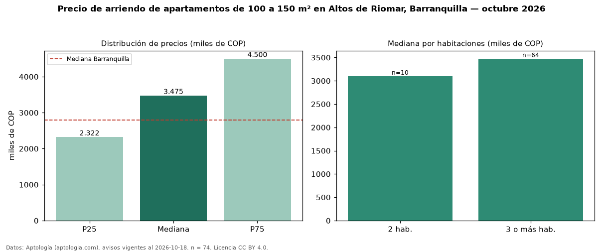

Precio de arriendo de apartamentos de 100 a 150 m² en Altos de Riomar, Barranquilla — octubre 2026
En Altos de Riomar, Barranquilla, la mediana de canon mensual de apartamentos de 100 a 150 m² es COP 3,48 millones, según 74 avisos vigentes. Frente a la mediana de todos los apartamentos en arriendo de Altos de Riomar (COP 3,73 millones, n = 210), queda 7 % por debajo; este segmento reúne el 35 % de esos avisos. Por metro cuadrado, la mediana es COP 28.037/m² al mes (n = 71), 14 % por debajo del conjunto de referencia (COP 32.520/m²). El área mediana anunciada es 122 m². El segmento con más oferta es el de 3 o más habitaciones (64 avisos, mediana COP 3,48 millones); pasar de 2 habitaciones a 3 o más habitaciones cambia la mediana +12 %. La administración mediana declarada es COP 655.000 al mes (n = 38), aparte del canon. La mitad central de los avisos va de COP 2,32 millones a COP 4,50 millones (razón 1,9), una dispersión moderada. El estrato más frecuente es 6 (55 % de los avisos con estrato). Datos: Aptología (aptologia.com), CC BY 4.0 — https://www.aptologia.com/arriendo/barranquilla/altos-de-riomar. Archivos: PDF, CSV con las cifras y gráfica PNG.

| Avisos únicos | 74 |
|---|---|
| Percentil 25 | COP 2.322.250 |
| Mediana | COP 3.475.000 |
| Percentil 75 | COP 4.500.000 |
| Mediana por m² | COP 28.037 |
Fuente: avisos vigentes de portales inmobiliarios recopilados por Aptología, deduplicados (mínimo 30 avisos únicos por celda). Precios pedidos, no cerrados. Fecha: 2026-10-18.